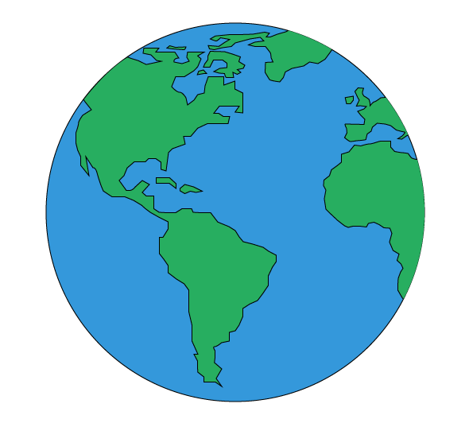
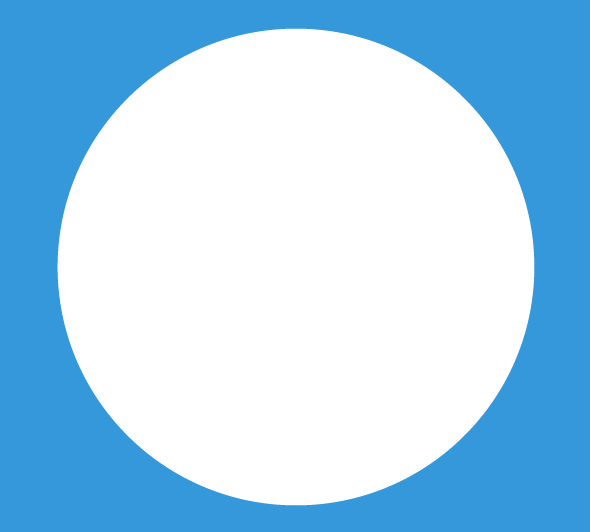
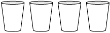
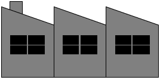
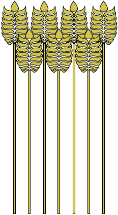
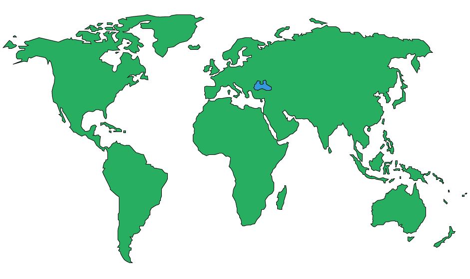
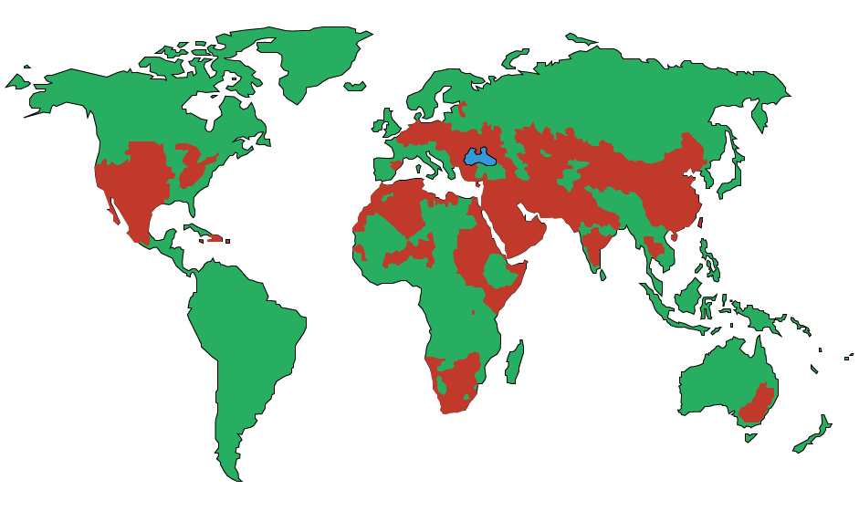
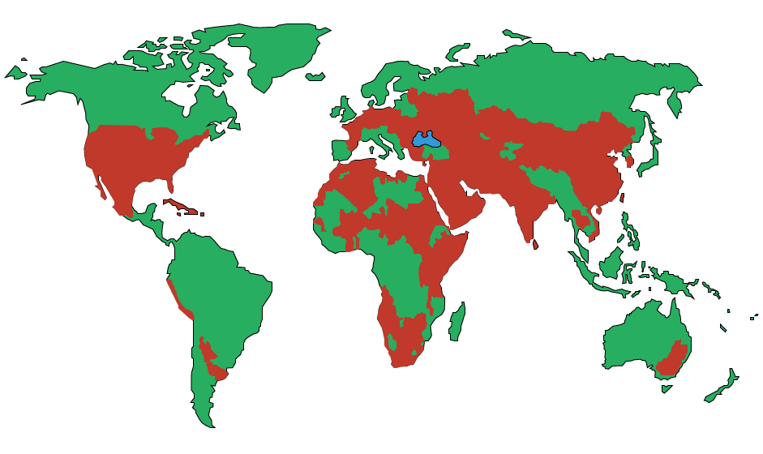

©2013 Tristan Darwent | www.tristandarwent.com | @tristandarwent
scroll down
 The earth is made up of roughly 75% water
3% of it
is fresh water
1% of
that is usable
It's uses are vital to our lives
  That's 783 million people!
That's 33% more people than residents of the City of Toronto
Since you have opened this page
children have died
of people in the world are currently affected severely by water scarcity
of people in the world are projected to be affected severely by water scarcity
In 2010, the areas of the world that were affected significantly by water stress looked like this
By 2050 it is projected to look more like this
  